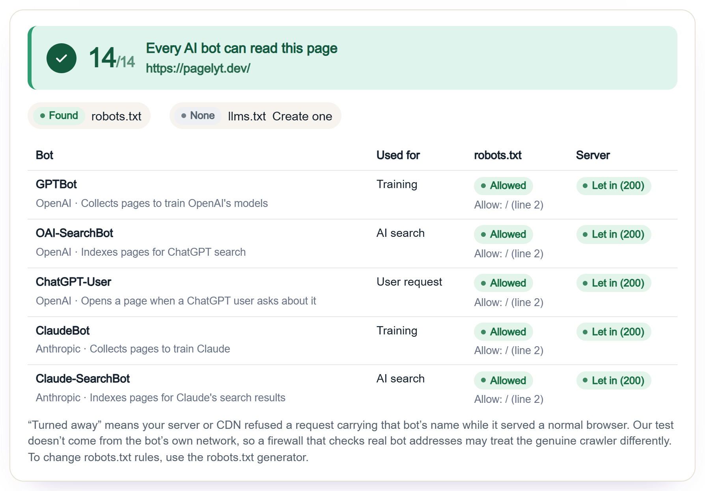

People now ask AI, not just Google. It gives one answer and names a few businesses.
Here are three local favourites:
Make sure robots.txt doesn't block GPTBot, ClaudeBot or PerplexityBot. Security plugins often do it by accident.
Add yoursite.com/llms.txt: a short summary of who you are, linking your key pages.
Use question headings, answer in the first line, and add an FAQ with FAQ schema.

Our free GEO guide shows how AI tools pick sources, and how to become one.
The free guide, plus tools to check your own site
How AI tools choose who to recommend
Can ChatGPT & co. read your site?
Make your AI map in a minute